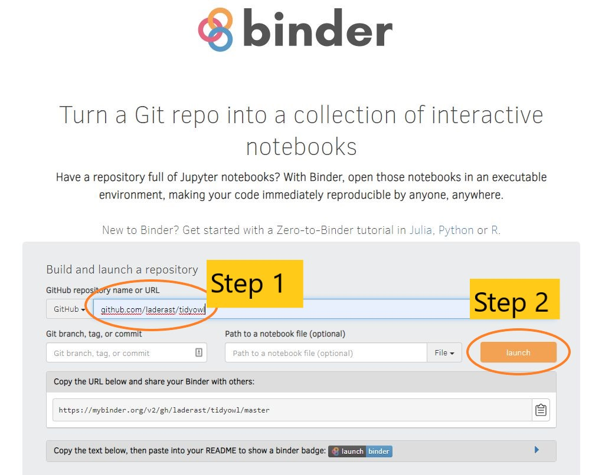
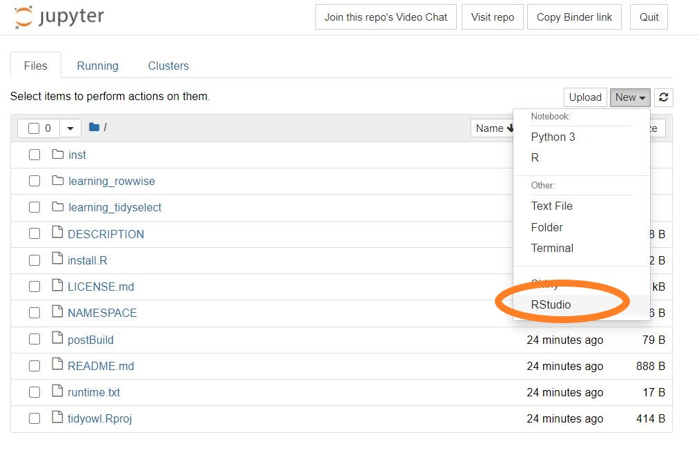
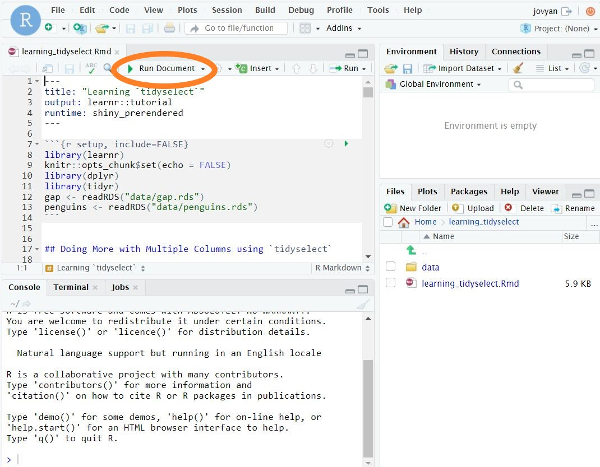

![]()
The learnr package is a wonderful way to package your tutorials. Anyone can download a learnr package of tutorials, and use learnr::run_tutorial() to run them on their own personal system.
Since learnr is based on shiny, these tutorials can also be published to a Shiny server such as shinyapps.io. However, one drawback to this is that the more popular the tutorial, the more access time you may be on the hook for, which can rapidly become expensive.
Enter mybinder.org, which is a way of running reproducible analyses and tutorials. In short, you give a mybinder.org server some information about the software environment needed to run your code, and you can run code based on your repo. Mybinder.org servers are a little limited, (1 Gb RAM), but this is more than capable of running most learnr tutorials.
Recently, they added Shiny as a deployable format, which means you can run shiny apps, including learnr tutorial packages off their servers.
I’m starting a learnr tutorial package called tidyowl and I decided to share what I’ve learned.
What’s the problem?
However, there are some differences between the file structure of a learnr package and the expected file structure of a shiny-ready mybinder.org repository.
Can we get both setups to work at the same time? Yes, we can.
Why would we want to run learnr tutorials off mybinder.org?
The short answer is making your material accessible to as many people as possible. learnr tutorials can be run from a phone or tablet, and running your tutorial for a lot of people doesn’t cost you any bandwidth or usage costs, as you’re using the same infrastructure that mybinder.org provides.
Quick Review of learnr package structure
For a package, learnr tutorials are stored in the following folder:
inst/tutorials/TUTORIAL_NAME
So, if you had a tutorial named learning_shiny it would live in
inst/tutorials/learning_shiny/
and the .Rmd file containing the tutorial should be named learning_shiny.Rmd as well.
The problem I encountered is that mybinder.org expects your tutorial to exist as a folder in the root of the repo. In other words, it needs to see
learning_shiny/ in the root of the repository to run.
We can fix this by adding a file called postBuild that gives instructions to run after the software environment is built. We’ll use it to copy the tutorials into the root folder.
Making your tutorial mybinder.org ready
In short, you’ll need 3 files to make your learnr tutorial mybinder.org ready: a runtime.txt, a install.R, and a postBuild file in order to make your learnr package compatible with mybinder.org. Let’s go through the steps:
Step 1. Specify a runtime.txt file in your root folder. You’ll need a file called runtime.txt that contains a single line:
r-3.6-2020-08-01This gives mybinder.org the signal that the Docker image needs to have R installed. You can see that I specified a version (3.6) and a snapshot date (2020-08-01). These should be a valid version and date for the snapshot - check the MRAN pages for more info: https://mran.microsoft.com/
Note: When R 4.0 and greater is available in MRAN, you should move to it. It includes RStudio Package Manager, which installs the binary images rather than installing from source code which speeds up building the Docker images by quite a bit.
Another Note: I tried to get this to work with a Dockerfile using the rocker/binder images, but I couldn’t get this image to work. If anyone has gotten this working, I’d appreciate you sharing how you did it.
Step 2. Specify package dependencies using install.R in your root folder - in this file, you’ll need to specify all the packages your tutorial is dependent on using install.packages() commands. Here’s the contents of my install.R file:
install.packages("learnr")
install.packages("here")
install.packages("tidyverse")Note: getting the dependencies right in package building can be major headaches to getting your binder container to work. You may have to specify some system dependencies in your apt.txt file for certain packages. This information is available here: https://github.com/rstudio/r-system-requirements
Step 3. Specify moving the tutorials in inst/tutorials/ to the repository root folder using the postBuild folder. These commands are run after the container is built and will make the tutorials accessible via Binder.
For example, for the tidyowl package, I have these mv commands in my postBuild:
mv inst/tutorials/learning_tidyselect/ .
mv inst/tutorials/learning_rowwise/ .You’ll need a mv line for each tutorial that your package contains.
Note: Using holepunch
I believe you can also use holepunch to make setup a little easier. https://github.com/karthik/holepunch
I haven’t tried it yet, but will update this when I do.
Build the Docker Image for your tutorial
Okay, almost there! Now we’re going to go to mybinder.org to build your Docker image. This is the software environment that your tutorial will run off of. This image will have shiny-server and RStudio installed on it automatically, which makes debugging your package easier.
When you’re ready, go to https://mybinder.org and put in the public location of your repository. Then click the “Launch” button.
Now your container will build. Note that this will take a little while (10+ minutes), especially if you need to install something like tidyverse. Note that this can be one of the hardest steps to get going, especially if you need packages such as sf (see above for a link to system dependencies).

When it’s done building, you’ll be at a Jupyter page. Click “New >> RStudio” to open up your image with RStudio.

You should see that your tutorial folders have been moved to the root folders. This is good confirmation that the mv statements of postBuild work. I personally like to have individual data/ folders in each tutorial, as it makes making them a little easier to deploy.
Test out running the tutorial by going to the .Rmd file and running it.

If you’ve setup everything right, you should see your learnr tutorial popup. I will say that this is usually the fine tuning step that takes the longest.
Note: there is a GitHub action (https://github.com/jupyterhub/repo2docker-action) to rebuild your Docker image on new commits. I’ll be looking into this in the future.
Specify the URL for running your tutorial.
Each tutorial in your package will need its own URL to run.
You’ll add the following to your mybinder.org link:
?urlpath=shiny/learning_tidyselect/The urlpath is a signal to mybinder that it will need to run shiny, and you’ll put the name of your tutorial folder instead of learning_tidyselect. Note the trailing slash after learning_tidyselect.
So, my final URL for the learning_tidyselect tutorial is this (click it and try it out):
https://mybinder.org/v2/gh/laderast/tidyowl/master?urlpath=shiny/learning_tidyselect/
You can now send this link out and nearly anyone in the world can run your learnr tutorial without installing R and not using up precious Shinyapps.io CPU time!
Caveats
Shiny apps may suddenly disconnect - have students reload the page if that happens.
Images get deleted off the mybinder.org servers within a week, so it is worth automating your container build to do so every week so that your students don’t have to wait for your container image to rebuild.
Also, progress is not saved, because the final url is different each time you run it off mybinder.org servers.
Acknowledgements
Thanks so much to the mybinder.org team, what they do is beyond awesome.
Thanks to Sang Yun Oh, whose repository helped me figure more of these details out. https://github.com/syoh/learnr-tutorial
Citation
@online{laderas2020,
author = {Ted Laderas},
title = {Getting {LearnR} Tutorials to Run on Mybinder.org},
date = {2020-09-15},
langid = {en}
}